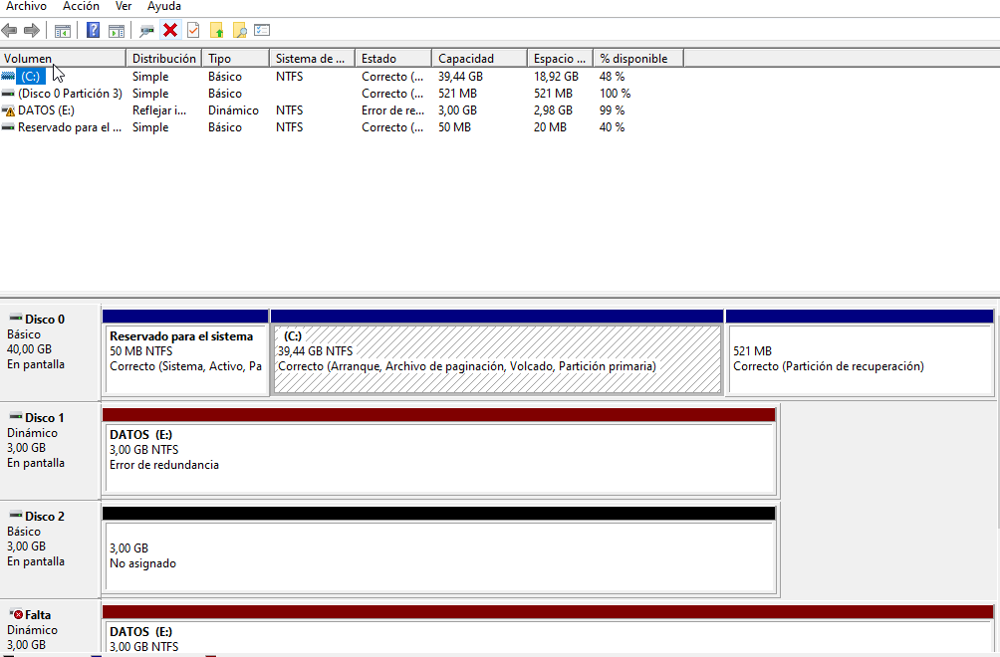
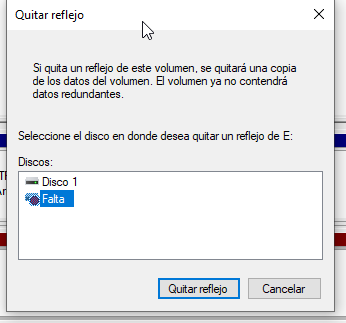
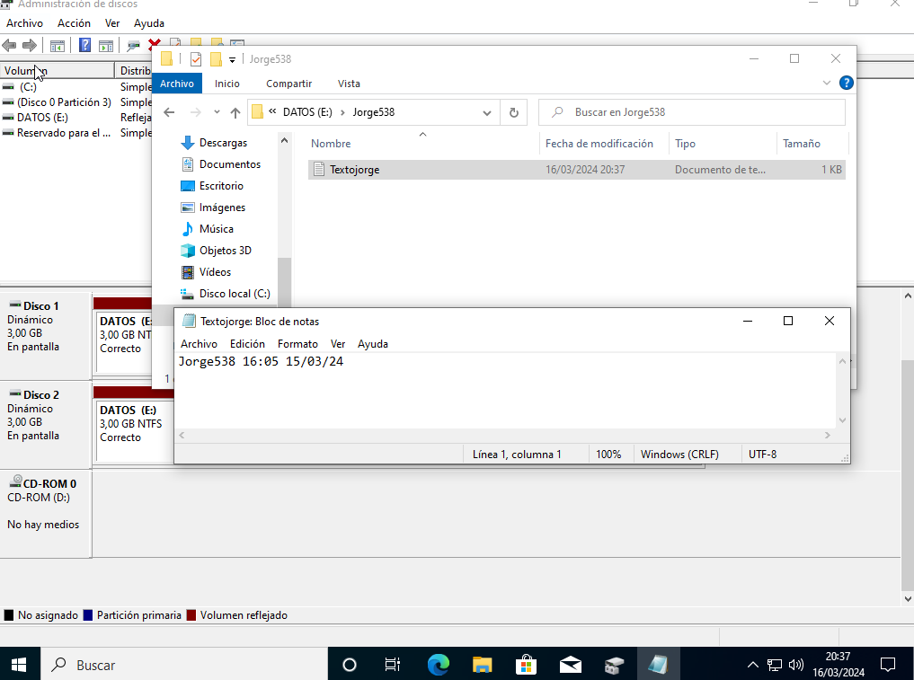

El objetivo de esta memoria es aprender a crear volumenes RAID 1 y comprender su utilidad.
1. Como desde un cliente no es posible crear un RAID 5 (debe estar conectado a un dominio), crea una nuevo volumen RAID 1 en el controlador de dominio con 3 discos de 3GB cada uno (imágenes que lo prueben con el nombre de tu usuario). Si todo ha ido bien pasa al siguiente paso, en caso contrario ¿Explica el motivo por el que no has podido continuar? (una vez explicado avisa al profesor) (imagen/es)
Me he cambiado el nombre de usuario pero me sigue apareciendo este nombre.
Seleciono los discos correspondientes y los convierto en dinámicos.
Creo el volumen y añado el segundo disco.
Le doy un tipo de archivo, un label y que de un formato rápidamente.
2. Deposita en el Volumen creado un fichero Nombre+3DNI.txt con tu nombre, la fecha y hora actual, y una frase ingeniosa (imagen)

Creo que el archivo con texto dentro del archivo Jorge538 y dentro de E:
3. Apaga la MV y desconecta uno de los discos duros que conforman el RAID 1. Arranca de nuevo la MV, inicia sesión con tu usuario y comprueba la tolerancia a fallos del volumen abriendo el fichero txt creado. (imagen/es donde se incluya la fecha y hora del equipo en ese instante)

Elimino el segundo disco que formaba parte del volumen. Me señala que hay un error de redundancia. Sin embargo el archivo creado previamente se puede abrir sin problemas. Eso es debido a que el RAID 1, al tener dos dicos con información reflejada, si uno es eliminado el otro disco mantiene la misma información. Es decir, que un volumen RAID 1 tiene tolerancia a fallos de perdida de información en uno de sus discos.
4. Repara el volumen RAID 1 y comprueba de nuevo el fichero txt (imagen/es)

Quito el reflejo del disco faltante.
Y teniendo un tercer disco sin formato, seleccionamos el disco con la información y añadimos un reflejo nuevo.

Compruebo si puedo abrir bien la carpeta y el documento de texto. No hay ningún problema. He reparado el error sin ningún problema.
No he encontrado ninguno. Sin embargo, al principio cometí el error de eliminar el volumen en vez de eliminar el reflejo. Así que tuve que empezar de nuevo la práctica.
Los volumenes RAIDs 1 son muy útiles debido a la tolerancia a la perdida de información.